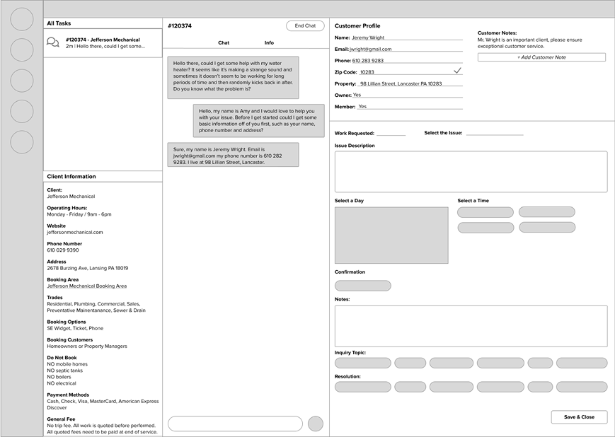
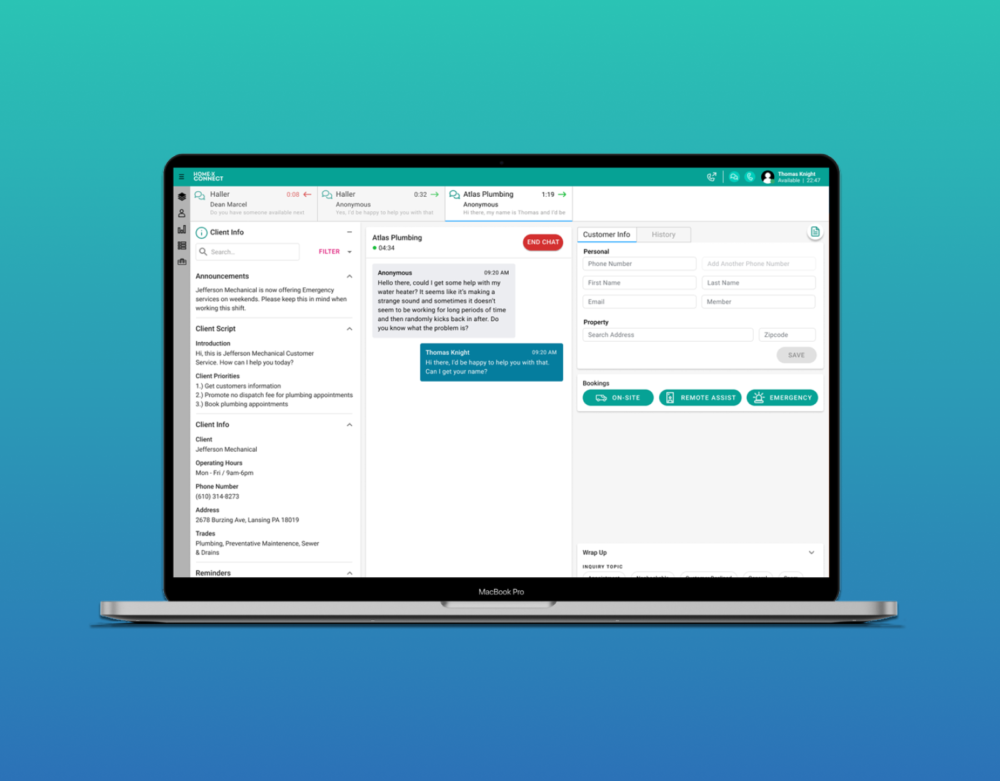

Overview
Support agents at Homex faced a significant challenge: they had to serve hundreds of trade businesses, each with different policies, information, and customer service standards. Agents had to mentally switch contexts between businesses and manually look up information for each interaction, leading to slower response times and inconsistent service quality.
HxConnect was built to centralize communication management and business-specific information, enabling agents to handle more interactions accurately and efficiently.
Project Details
Company: HomeX
Timeline: ~2 years (2019-2021)
Role: Product Designer
Team: Design, Engineering, Product
The Problem
Support agents were responsible for communicating with customers on behalf of multiple trade businesses, but each business had unique policies, service offerings, and information. This meant:
- Agents had to manually switch context between businesses
- Inconsistent information was being provided to customers
- Response times were slow due to information lookup overhead
- Agent error rates were high, leading to customer dissatisfaction
- Each agent could only handle a limited number of conversations
Design Process
We took a research-first approach to understand the workflows and pain points of support agents:
Research & Discovery
We analyzed other communication platforms to understand industry standards, conducted interviews with support agents to understand their daily workflows, and observed how agents currently managed multiple business contexts.
Ideation & Wireframing
With insights in hand, we ideated solutions and created wireframes that prioritized visibility and accessibility to business-specific information while managing chat and call interactions.
Collaboration with Engineering
We worked closely with the engineering team to discuss feasibility, technical constraints, and implementation details before moving to high-fidelity design.
Launch & Iteration
After launch, we continued observing user behavior, collecting feedback, and iterating on the platform to solve new problems that emerged in the real world.
Key Design Decisions
Multi-Panel Layout
The interface was divided into four sections: active chats/calls, customer history, appointment booking, and business information reference. This allowed agents to handle multiple interactions simultaneously while having critical business information always visible, reducing context switching and improving response times.
Business-Specific Chat Shortcuts
Each business can program custom chat shortcuts that agents can quickly send to customers. These shortcuts ensure consistency and accuracy by having business owners pre-approve common responses. Agents can send complex, accurate information with a single click instead of manually typing it out.
Business Information Side Panel
A dedicated side panel displays all relevant business information—policies, hours, services, contact details—that agents need to reference during conversations. This eliminates the need for agents to search for information across multiple systems or tabs.
Impact & Outcomes
Increased Client Onboarding
The platform made it significantly easier for new support agents to manage conversations for multiple businesses, allowing Homex to onboard more clients.
Faster Response Times
Agents could respond faster due to quick access to business information and pre-programmed shortcuts, improving customer satisfaction.
Higher Agent Capacity
Agents were able to handle significantly more conversations simultaneously, improving operational efficiency for Homex.
Wireframes & Mockups

Key Learnings
Working on HxConnect for two years taught me valuable lessons about product design:
- Observation is powerful: Spending time watching agents work revealed nuances that interviews alone wouldn't have captured.
- Post-launch iteration is critical: No amount of user research before launch can predict all real-world issues. Staying close to users after launch and being willing to iterate is essential.
- Simplicity scales: Building simple, focused features (like shortcuts) had more impact than adding complexity. Agents appreciated tools that reduced friction.
- Design systems matter: Maintaining consistency across features became increasingly important as the product grew. Documentation and reusable components saved time and ensured quality.